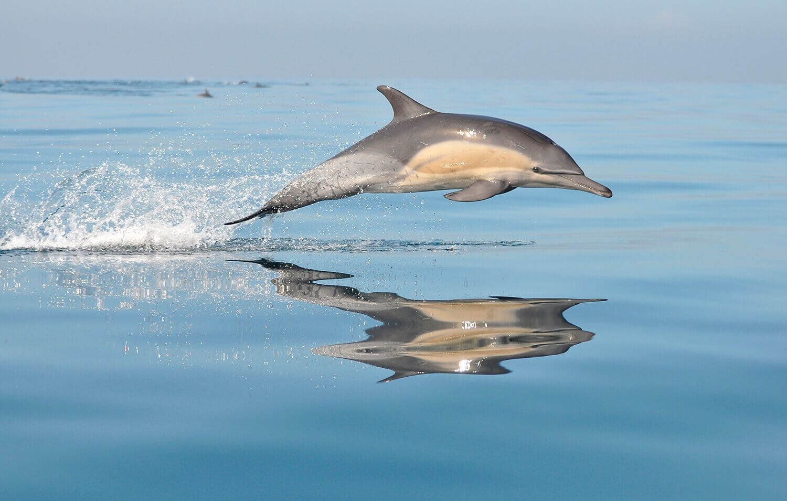
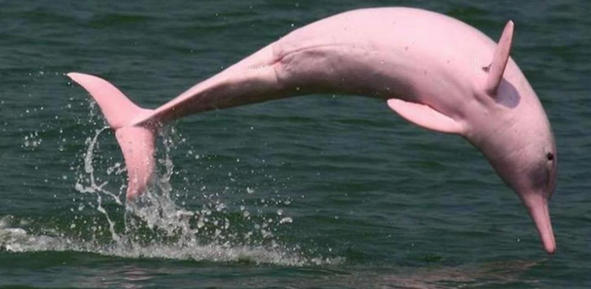
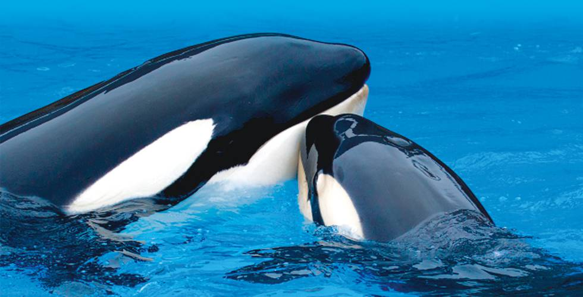
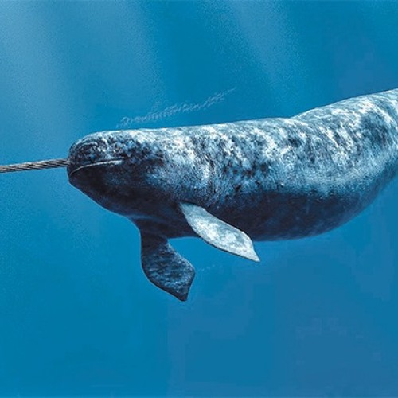

<!DOCTYPE html>

<html>
	<head>

		<title>
		Ballena Azul
		</title>
	</head>
</html>

<h1> Ballena Azul </h1>
<p></p>

<body bgcolor= #b2c8eb>
<p align="center"><font size= "4" color= "black">Balaenoptera musculus</p>

<link rel="stylesheet" type="text/css" href="../css/estilos.css" media="screen">

<body>
<h2> Distribución geográfica </h2>
<p>En el Atlántico Norte se han localizado dos grupos de la subespecie B. m. musculus. El primero se encuentra en Groenlandia, Terranova y Labrador, Nueva Escocia y el golfo de San Lorenzo, con unos 500 ejemplares. El segundo (el grupo más al Este fue descubierto en las Azores en primavera y en Islandia en julio y agosto) se supone que sigue la Dorsal mesoatlántica entre las dos islas volcánicas. Más allá de Islandia, han sido descubiertos tan al norte como Spitsbergen y Jan Mayen, aunque tales observaciones sean escasas. Los científicos desconocen dónde pasan los rorcuales los inviernos. Se estima que la población total del Atlántico Norte está entre 600 y 1500 individuos.</p>

<p>En el Hemisferio Sur parece haber dos subespecies distintas, la ballena azul antártica (B. m. intermedia) y el poco estudiado rorcual azul pigmeo (B. m. brevicauda) que se encuentra en aguas del océano Índico. Investigaciones recientes (mediados de 1998) proporcionaron una estimación de 2280 individuos en el océano Antártico,68​ de las cuales menos del 1 % probablemente fueran ballenas azules pigmeas.69​ Las estimaciones de un trabajo realizado en 1996 daban como resultado 424 ballenas pigmeas sólo en una pequeña área al sur de Madagascar,70​ por lo que es probable que los ejemplares en el todo el océano Índico sean varios millares. Si esto es cierto, las poblaciones globales serían más altas que las dadas por los pronósticos iniciales.</p>


<h2> Biología </h2>
<p>Tiene un cuerpo largo y esbelto que parece delgado en comparación con la constitución más rechoncha de otros misticetos. La cabeza es grande (abarca aproximadamente un cuarto de su cuerpo), plana y en forma de «U», con una cresta que va desde los espiráculos hasta el extremo anterior del rostro.20​ La parte frontal de la boca es gruesa con entre 300 y 400 barbas a cada uno de sus lados, cada barba con una longitud de alrededor de un metro, y que cuelgan de la mandíbula superior;20​ son particularmente anchas (50 cm) en proporción a su longitud.21​ Tiene entre 55 y 88 surcos (llamados pliegues ventrales) a lo largo de la garganta y paralelos al cuerpo.20​ Estos pliegues ayudan a la evacuación del agua de la boca después de sus «embestidas» para alimentarse. La aleta dorsal (sólo visible brevemente durante la secuencia de sumersión) está situada al inicio del último cuarto del cuerpo y es pequeña y de forma variable (triangular, redondeada, ligeramente falcada o apenas una pequeña protuberancia).20​ Cuando sale a la superficie para respirar, saca su espalda y el espiráculo fuera del agua en mayor medida que otros grandes misticetos como el rorcual común o el rorcual boreal. Esta característica puede ser utilizada por los observadores para diferenciarla de estas especies en alta mar. Antes de iniciar una maniobra para sumergirse a gran profundidad, suelen sacar su aleta caudal fuera del agua.22​ Cuando respira en la superficie, emite un denso y espectacular chorro de vapor de agua que puede alcanzar una altura de entre 6 y 12 m21​ (generalmente en torno a los 9 m),22​ que puede ser visto desde una gran distancia en un día de mar tranquilo. Su capacidad pulmonar es de 5000 litros.23​ Como todos los misticetos, tienen un espiráculo doble, protegido anterior y lateralmente por una prominencia mayor que en los demás rorcuales</p>
</body>

<table border="5" class="center">
<tr>

<td>
		<p><a href = '../index.html'><figcaption style = 'text-align:center'>Inicio</figcaption ></a></p>
	</td>
	<td>
		<p><a href = '../html/ballenajorobada.html'><figcaption style = 'text-align:center'>Ballena jorobada</figcaption></a></p>
	</td>

	<td>
		<p><a href = '../html/delfin.html'><figcaption style = 'text-align:center'>Delfin</figcaption></a></p>
	</td>

</tr>
<tr>
	<td>
		<p><a href = '../html/delfinderio.html'><figcaption style = 'text-align:center'>Delfin de rio</figcaption></a></p>
	</td>
	
	<td>
		<p><a href = '../html/orca.html'><figcaption style = 'text-align:center'>Orca</figcaption></a></p>
	</td>
	<td>
		<p><a href = '../html/narval.html'><figcaption style = 'text-align:center'>Narval</figcaption></a></p>


	</td>
</tr>

</table>

